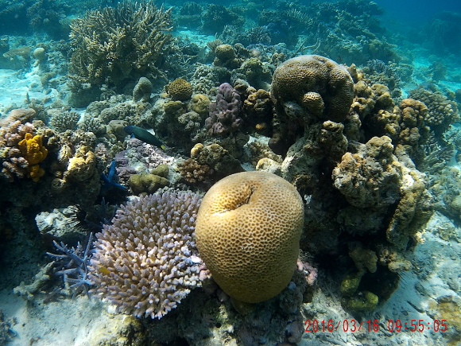
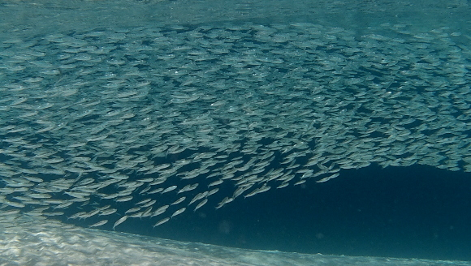
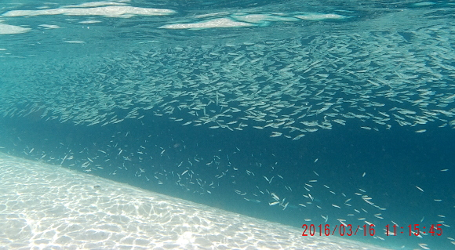
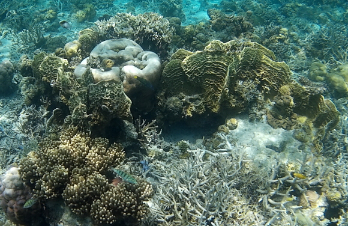
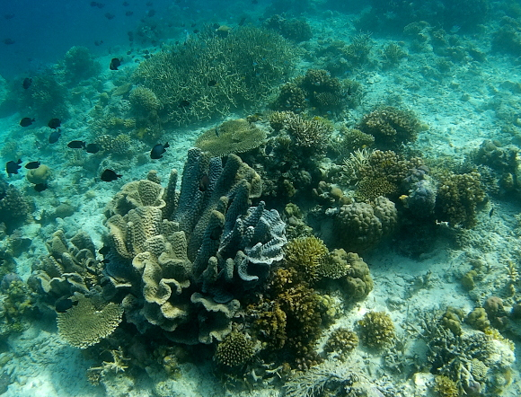
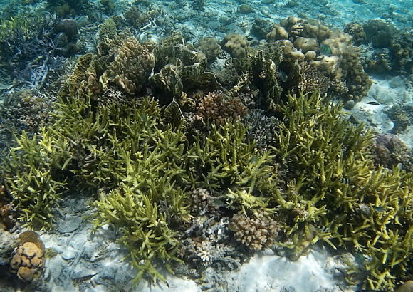
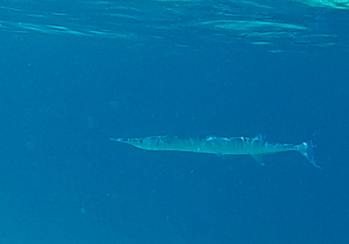
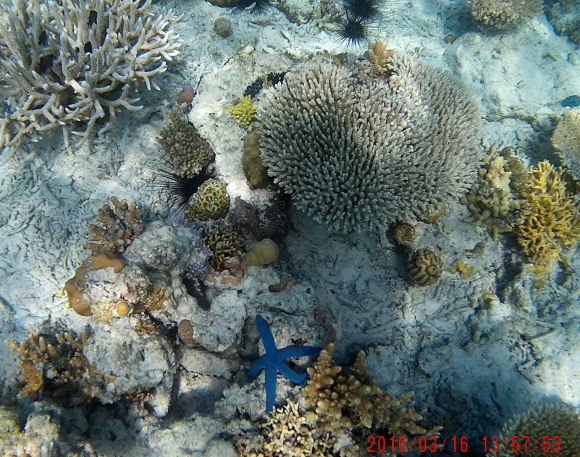

-------------------------------------------
Took a long-day's bus trip from Kota Kinabalu (KK) to the small port-town of Semporna, in Malaysian Borneo. Malaysians refer to the two halves of their country as "East" and "West", but I prefer the terms "Peninsular" and "Borneo". The bus driver would drive crazy fast, then pull over, and have a cigarette on the side of the road before hopping aboard to continue the journey. Blew a tire, so limped along the last 120 kilometers, pulling into the final station several hours late.
Many dive and snorkeling sites are serviced from here, including the world famous oceanic atoll of Sipadan. Before leaving KK, sent email to Scuba Junkie requesting lodging and snorkeling trips, and snorkeling reservation for Sipadan.
-------------------------------------------
| Not very thrilled when Scuba Junkie announced destination today was Sibuan Island, as this is duplicate from 10 years ago. Did not remember it having coral this nice, albeit mostly hard corals. This is also my return to the water after leg injury, so taking it easy makes a lot of sense. |  |
| These two photos are of a minnow dance performance which captivated me for at least 10 minutes. Probably millions of performers, very well coordinated. They were in fairly shallow water near the sandy tip of the island. |   |
| More diversity. All these corals have names, but inclusion will have to wait until I get home to my book on corals. How many fish do you count? |  |
| More garden, with too many fish to count. |  |
| Green staghorn(?), and paper flower corals. How can humans dynamite the beauty represented by these photos? |  |
| Closer than normal to this (needlefish?). See them often near the surface, sometimes 3 or 4 together. Many, like this one, are almost two feet long. |  |
| The good news is that the leg feels better in the water then on land. Next available slot to visit Sipadan Island with Scuba Junkie is in April, after my flight back to the Peninsula. But a friend says other outfits offer day trips, and it's easier to book on short notice. Got homework tonight! |  |
Babu Bill
Question? Contact me at the Juno.com address Dancer2SEAsia.
Have a nice day!
Special Topics: